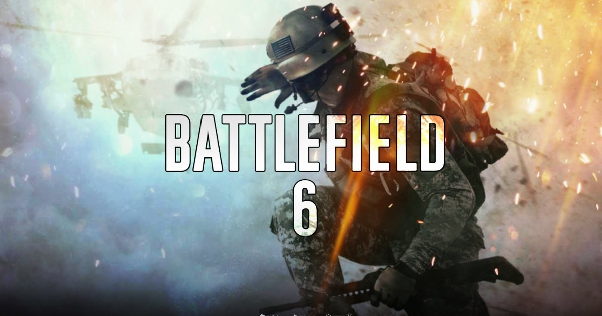

Final Fantasy 14: Endwalker llegará en otoño; la versión para PS5 del MMO en abril.
Square Enix ha presentado en el Final Fantasy XIV Announcement Showcase emitido durante la madrugada de este 6 de febrero la cuarta expansión del MMO, Final Fantasy XIV: Endwalker, que llegará en otoño de 2021 para PC, Mac, PS4 y PS5 para concluir el arco argumental que inició Final Fantasy XIV: A Realm Reborn. Sí, habéis leído bien, también para PS5: el 13 de abril comenzará la beta abierta para esta versión.
Durante la presentación se ha emitido el primer teaser tráiler cinematográfico de Endwalker, que podéis ver insertado sobre este párrafo. En lo argumental, la cuarta expansión supondrá "un nuevo comienzo", ya que narrará el clímax de la historia de Hydaelyn y Zodiark; los Warriors of Light tendrán que viajar hasta los confines de Hydaelyn y hasta la luna.
La expansión aumentará hasta 90 el nivel máximo; añadirá nuevas zonas como Garlemald (y su capital Thavnair) y la ciudad de Radz-at-Han, e incluso se podrá viajar hasta la luna; se añade la tribu de bestias Arkasodara; y por supuesto no falta el añadido de amenazas (Anima incluida), Dungeons y una Raid de gran dificultad denominada Pandæmonium.
Las esperables nuevas piezas de quipo y recetas de fabricación se verán acompañados de una nueva serie de Alliance Raids, contenidos PvP a pequeña escala, un aliado adicional para el sistema Trust (Estinien Wryrmblood), el distrito residencial Ishgard, novedades para el Gold Saucer, un santuario isleño para relajarse, un sistema para viajar entre centro de datos, y más importante aún, nuevos oficios, entre los que se ha desvelado el Sage en el tráiler bajo estas líneas.
El nuevo Battlefield 6 llegará a PS5, Xbox Series X y PC en las fiestas navideñas de 2021.

Los detalles son escasos en estos momentos pero, según EA, el nuevo Battlefield será la "visión de próxima generación de la franquicia"con una "escala nunca vista antes". Si los rumores son ciertos, será impresionante.
EA dice que sabremos más sobre el nuevo Battlefield en los próximos meses, pero por el momento aquí tenéis todo lo que sabemos por ahora — y lo que esperamos.
Aunque EA Dice no ha lanzado ningún tráiler oficial de Battlefield 6, la compañia sí presentó un "tráiler tecnológico" durante la conferencia EA Play 2020, con algunas imágenes del "trabajo en progreso", nuevas animaciones faciales y una gran cantidad de soldados corriendo hacia la batalla.
La directora de estudios de EA, Laura Miele, cuenta en el video que están "creando batallas épicas a una escala y una fidelidad diferentes a todo lo que hayas experimentado antes". El plan de la compañía es exprimir la potencia de las nuevas consolas al máximo.
Por lo que podemos ver en el vídeo bajo estas líneas, las animaciones faciales serán más realistas que antes. Los campos de batalla serán también más grandes, uno de los rumores que más suena recientemente.
Destruction AllStars: Su uso del DualSense está inspirado en el de Astro's Playroom.
Lucid Games ha aprovechado todas las funcionalidades del DualSense, el mando de PlayStation 5, en Destruction AllStars inspirados por Astro's Playroom, el plataformas tridimensional incluido en todas las PS5 que sirve a modo de demostración técnica de los usos del pad. En una entrevista con Vandal, el director del juego Colin Berry y el productor sénior de XDEV, John McLaughlin, han explicado cómo han integrado la respuesta háptica, los gatillos adaptativos y el altavoz a su juego de conducción y acción arcade.
McLaughlin explica que lo importante no es el uso por separado de esas funciones, sino las sinergias entre ellas: "hemos hecho mucho no solo con la respuesta háptica y los gatillos y el altavoz, sino en cómo lo juntas todo. Es la combinación de todo ello. Es el altavoz funcionando junto a la respuesta háptica lo que hace que todo se sienta vivo".
"Tenemos respuesta háptica direccional para que puedas sentir los golpes desde lados diferentes, Y como dice John, cuando juntas eso con el altavoz... Hablamos con los chicos de Sony Japan y realmente nos ayudaron muchísimo con la respuesta háptica en los primeros días", profundiza Berry, quien explica que "puedes sentir cada impacto desde la dirección en la que ha llegado y se expande por el pad en tus manos". El director creativo asegura que cuando se controla a un personaje que va a pie, la respuesta háptica replica los pasos y estos son distintos según la superficie por la que corre.
En cuanto a los gatillos adaptativos, dice: "Hay acciones realmente satisfactorias, como cuando el coche se daña: pierdes una rueda o has recibido daño, empiezas a percibir distinto el freno y el acelerador, dependiendo de cómo de dañado está el coche". Así, la presión de los gatillos reflejará el estado del vehículo.
Son usos que recuerdan, en cierto modo, al mencionado Astro's Playroom de Team Asobi y Japan Studio, y desde Lucid Games no esconden que se han fijado en él: "Estoy seguro de que puedes imaginarlo si jugaste Astro’s Playroom, ya sabes, la resistencia en los gatillos es tan variada y puedes hacer muchas cosas con ella. Nos fijamos en eso y dijimos: "Tenemos que integrarlo en el sistema de daños"".